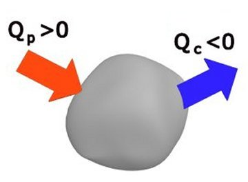

Provocarea 1-1
Provocarea 1-1
Dacă peste apa fierbinte dintr−un termos torni apă rece, apoi închizi termosul, te aştepţi ca apa iniţial caldă să rămână caldă?
Elemente de termodinamică. |
Calorimetrie |
Provocarea 1-1
Dacă peste apa fierbinte dintr−un termos torni apă rece, apoi închizi termosul, te aştepţi ca apa iniţial caldă să rămână caldă?
Moleculele apei iniţial caldă sunt mai energice. Amestecate cu cele ale apei iniţial rece (mai puţin energice), vor interactiona până când energiile cinetice medii ale moleculelor se vor egala. Toată apa din termos va ajunge la aceeaşi temperatură − mai mică decât cea a apei iniţial caldă şi mai mare decât cea a apei iniţial rece.
Generalizarea unor astfel de observaţii constituie:
 Primul principiu al calorimetriei: Dacă mai multe corpuri cu
temperaturi iniţiale diferite interacţionează termic, după un timp suficient de lung, ajung toate la aceeaşi temperatură.
Primul principiu al calorimetriei: Dacă mai multe corpuri cu
temperaturi iniţiale diferite interacţionează termic, după un timp suficient de lung, ajung toate la aceeaşi temperatură.
Provocarea 1-2
Dacă peste apa fierbinte dintr−un termos torni apă rece, apoi închizi termosul, ce se întâmplă oare cu energia cinetică pe care o pierd moleculele apei iniţial fierbinte?
Energia cinetică pierdută de moleculele iniţial mai energice este câştigată de moleculele iniţial mai puţin energice (ale apei iniţial rece, ale termosului, ale aerului din imediata vecinătate a apei etc.). Pe ansamblu, nu se pierde şi nu se câştigă energie cinetică de agitaţie termică - aceasta doar se redistribuie.
Pentru a deosebi energia cedată şi cea primită prin interacţiune termică, asociem semne diferite pentru cantitatea de căldură cedată şi pentru cea primită.
Prin convenţie, considerăm pozitivă cantitatea de căldură primită de un sistem
şi negativă cantitatea de căldură cedată de acesta. (figura 1−1)
|  | Figura 1-1. Convenţia de semne pentru cantitatea de căldură primită şi cea cedată de un sistem termodinamic. |
Când mai multe corpuri schimbă căldură între ele, cantitatea de călduraă cedată de unele este, în valoare absolută, egală cu cantitatea de căldură primită de celelalte, dar de semne contrare:
− Qcedată = Qprimită .
Astfel, avem
Al doilea principiu al calorimetriei: Suma algebrică a cantităţilor
de căldură tranferate între corpurile aflate în interacţiune termică este nulă:
| Q1 + Q2 + ... = 0 | (1) |
Relaţia (1) este numită ecuaţia calorimetrică. Aceasta exprimă bilanţul cantităţilor de căldură transferate prin interacţiune termică.
Fiecare termen din membrul stâng al ecuaţiei calorimetrice reprezintă cantitatea de căldură cedată sau primită de unul dintre patricipanţii la transferurile de căldură. Unii termeni sunt negativi (reprezentând cantităţile de căldură cedată), ceilalţi fiind pozitivi (reprezentând cantităţile de căldură primită).